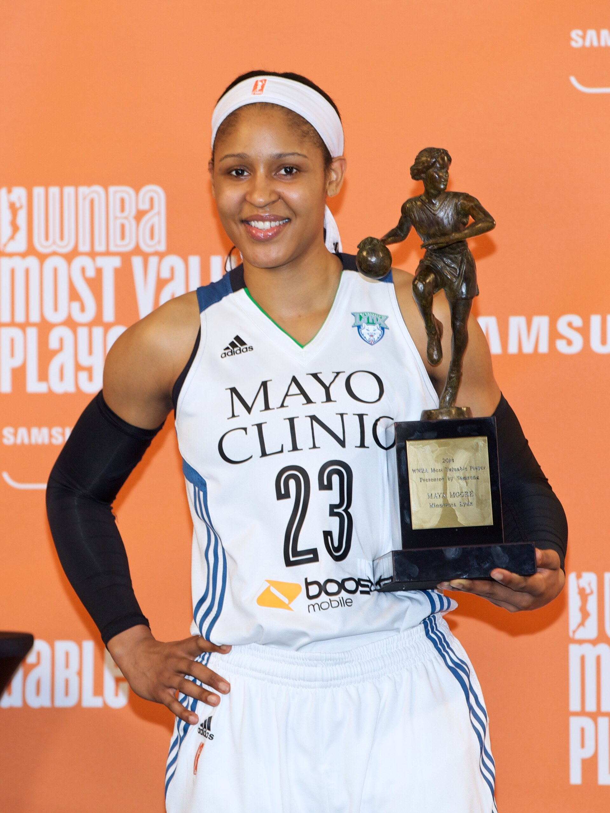

MVP ballots, Rookie of the Year votes, GM surveys: awards are the
league's official memory of who mattered. We test that memory against the
performance data itself.

The trophy amid the confetti: the recognition every season plays for.
Wikimedia Commons
Our research question: “How well do awards and expert opinions in
the WNBA reflect players’ actual performance on the court, and what might explain
the gaps between recognition and reality?” — including how accurate the GM
survey predictions have been, and what biases they reveal of people in
“power.”
Sometimes the voters agree completely. In 2024, Caitlin Clark's Rookie of the Year
award was nearly unanimous — recognition and performance pointing the same way.
2024 Rookie of the Year: near-unanimous
First-place votes · Source: league voting results (preliminary)
And sometimes they don't. One year later, the MVP race produced a result that looks
decisive at the top — until you see how fast recognition collapses below it.
2025 WNBA MVP voting: all thirteen players who received votes
Total voting points by player · Source: Across the Timeline (award votes) · From our individual data visualization assessment
The bar chart shows the total voting points for all thirteen players who received
votes in the 2025 WNBA MVP race. A'ja Wilson won the award with 657 points, and she
got 51 of the 72 first-place votes. Napheesa Collier finished second with 534 points.
When we look at the chart, the race at the top was actually closer than people think:
the gap between Wilson and Collier is only 123 points, which is small compared to the
gap between the top two and everyone else. Alyssa Thomas finished with 391 points, but
after her, the bars drop very fast — Allisha Gray only received 180 points and
Kelsey Mitchell only 93, even though both of them had strong seasons. In the whole
league, only thirteen players received votes, and below the top five, nobody received
more than 5 points. This means even getting your name on this ballot is already rare,
but the recognition inside the ballot still goes almost completely to the top one or
two stars. This matters because award votes become the league's official memory of who
was important in a season. This chart shows the pattern of who receives votes; whether
these votes really match players' actual performance is the second part of our
research question, and the scatter plot below examines it directly.
2025 MVP ballot, in full
Votes by place · Source: Across the Timeline (award votes)
Player
Team
1st
2nd
3rd
4th
5th
Points
A'ja Wilson
Las Vegas Aces
51
21
0
0
0
657
Napheesa Collier
Minnesota Lynx
18
42
12
0
0
534
Alyssa Thomas
Phoenix Mercury
3
9
59
1
0
391
Allisha Gray
Atlanta Dream
0
0
1
54
13
180
Kelsey Mitchell
Indiana Fever
0
0
0
15
48
93
A'ja Wilson finished 123 points ahead of Napheesa Collier — but was the
statistical gap between their seasons as large as the voting gap? To find out, we
placed every player who scored at least 400 points in 2025 on one chart: her season
scoring against her MVP votes. Hover over any dot to see who she is.
Scoring vs. recognition, 2025: two different worlds
Season total points vs. MVP voting points, all 42 players with 400+ points · Orange = received votes, gray = none · Source: Across the Timeline · From our individual data visualization assessment
If recognition simply followed scoring, the dots would go up together like a line.
But instead, the chart splits into two worlds. Along the bottom, there is a long gray
row of high scorers who received almost nothing: Kelsey Plum scored 839 points and
received zero votes, and Kelsey Mitchell, the second-leading scorer in the league with
890 points, only received 93 voting points — about one-seventh of the winner's
total. Above them, a small orange group rises quickly: A'ja Wilson (937 points, 657
votes), Napheesa Collier (755, 534), and Alyssa Thomas (599, 391). One interesting
point is that Thomas received four times more votes than Mitchell even though she
scored almost 300 fewer points. This shows that voters care about more than
scoring — but the chart also shows the cost: if a player scores a lot on a
losing or less popular team, she becomes almost invisible in the league's official
memory. One limitation is that total points partly depend on how many games a player
played, so our final analysis will repeat this comparison with more metrics. Still,
the pattern is clear: MVP voting is not a measurement of production, but a judgment
about story.
The other experts: what the GMs predict
Award voters are not the only experts whose judgment our question tests. Every
season, the league surveys its General Managers — the people who draft, trade,
and pay players — and publishes their predictions. Their 2026 preseason picks
are now on the record, which gives our project a natural experiment: at the end of
the season, we can measure exactly how right the people in power were.
"Who will win the 2026 MVP?" — the GMs' answers, on the record
Share of General Managers picking each player, 2026 preseason survey · Source: Across the Timeline (GM surveys)
Sixty percent of the league's executives picked the same player — the same
concentration of expectation we saw in the award votes. Whether their confidence
turns out to be foresight or bias is precisely what our research question asks, and
the season's end will answer it in numbers.
What we will investigate
Using complete award votes, GM survey answers, and season statistics, we will
measure the gap between recognition and performance across league history: whether
vote margins match statistical margins, whether voters favor winning teams and past
winners, and how often the GMs' preseason predictions actually came true. The GM
surveys deserve special attention because they are the opinions of the people with
actual power over careers — the executives who draft, trade, and pay players.
If their predictions repeatedly miss, or repeatedly favor the same famous names,
the bias is not just a trivia error: it is the worldview of the league's
decision-makers, written down annually and testable against what actually
happened.
What the scholarship says
Our question stands on an established scholarly foundation. In sports economics,
David Berri's foundational study asked whether the player judged “most
valuable” is actually the one whose play produces the most wins — and
found that perception and measured production regularly disagree; our scatter plot
applies his question to the WNBA. On the expert side, Tobias Berger and Frank
Daumann showed that even professional basketball front offices evaluate players with
systematic anchoring bias, which is exactly why the GM survey predictions above
deserve testing rather than trust. And Sarah Banet-Weiser's study of the WNBA's
founding years showed how race and gender shape which basketball players get valued
and how — the cultural forces that vote counts alone cannot show. Full
citations are on our Sources page.
Why it matters
Awards are how a league writes its own history. Decades from now, casual fans
will not re-read box scores — they will read lists of MVPs and All-WNBA teams,
and those lists will stand in for the truth. If the votes systematically favor
certain teams, styles, or stories, then the league's official memory is quietly
biased, and players who performed brilliantly in the wrong uniform simply vanish
from it. Measuring the gap between recognition and reality is our way of auditing
that memory while the evidence still exists.
The 2025 MVP vote data comes directly from our dataset; the 2024 ROY
vote is preliminary and will be verified. Analysis and final visualizations by our
team are in progress.